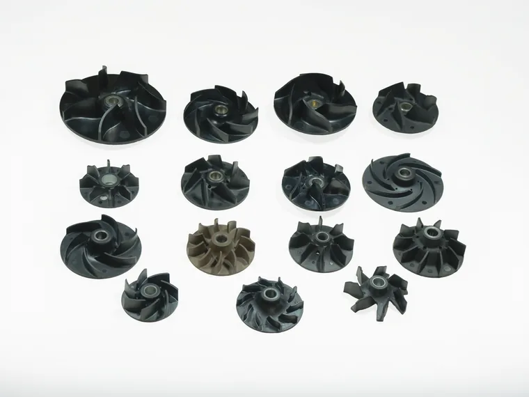
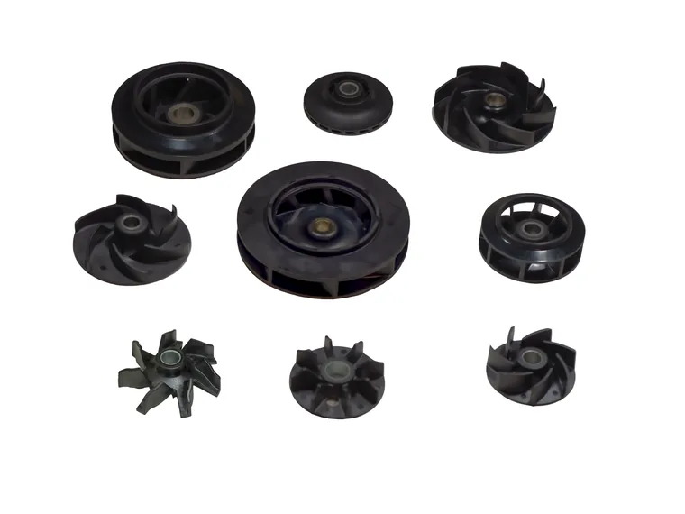
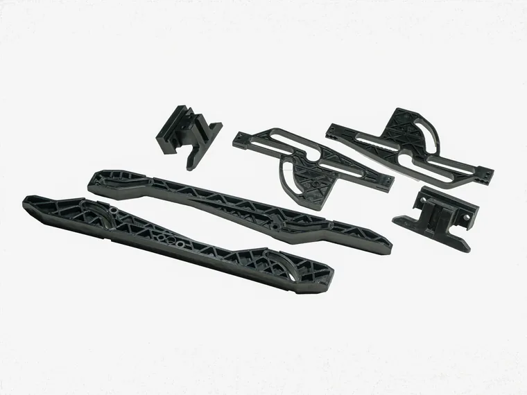
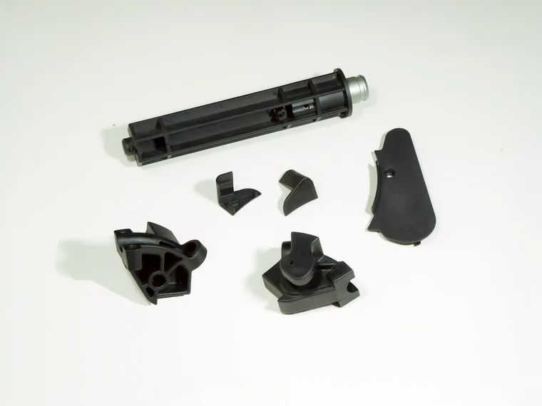
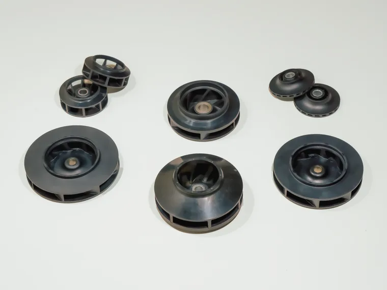
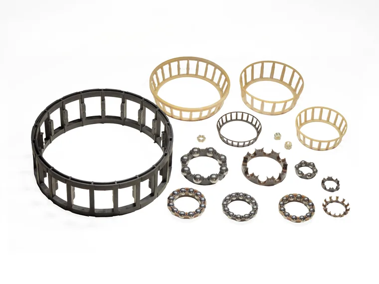
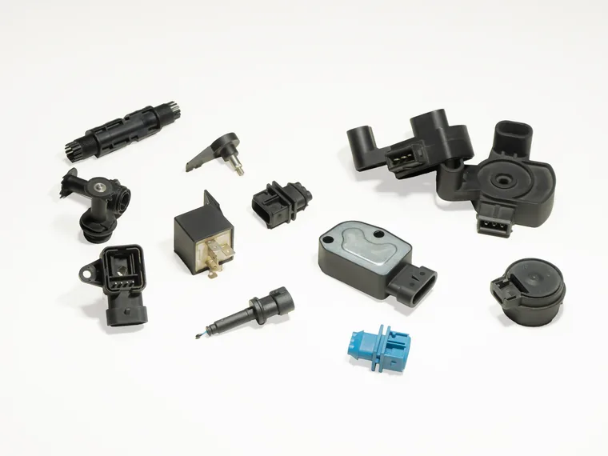
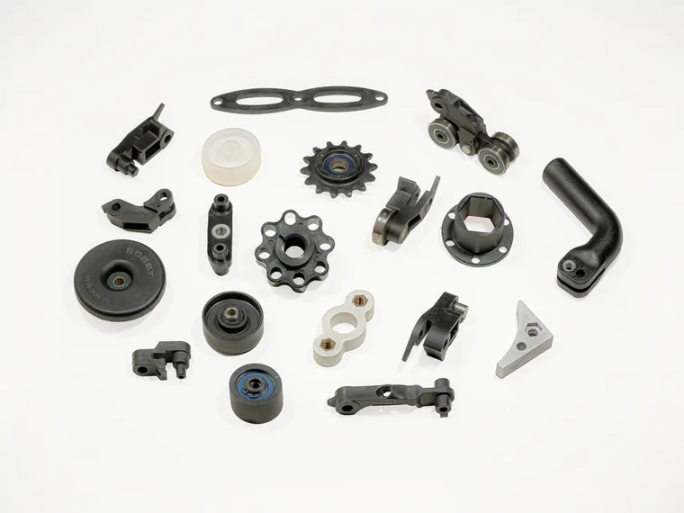
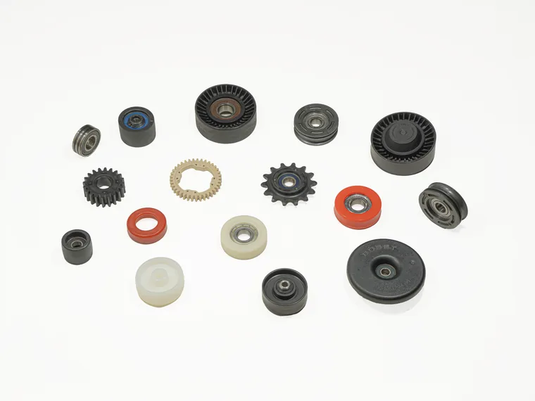
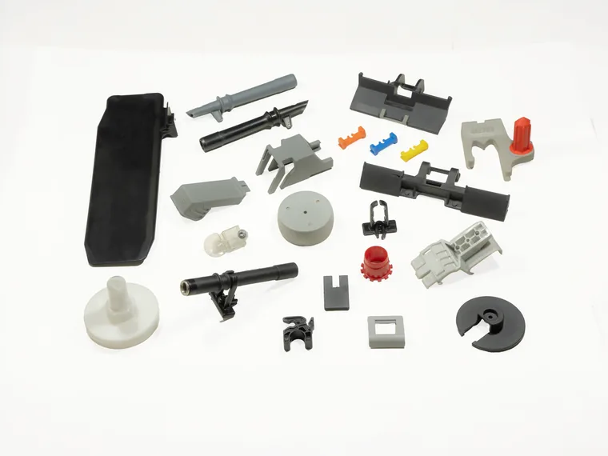
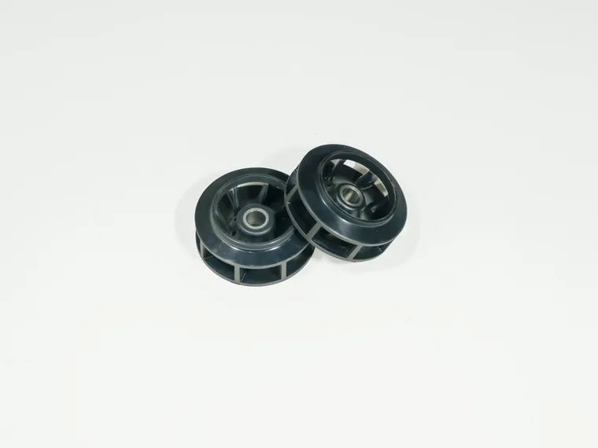
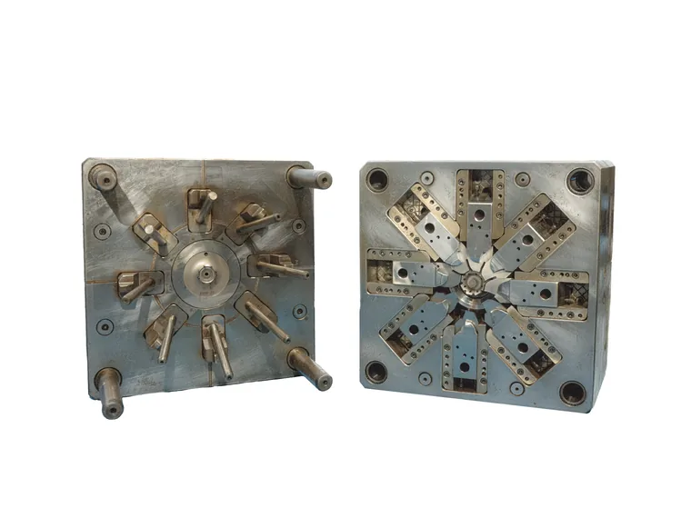
A plastic moulding manufacturer needed their product range documented for an advertising catalog. No AI, no compositing, no retouching a component into something it isn'''t — just the camera, a full lighting setup, and every part shot by hand in high definition.
On a B2B floor the brief inverts: the job isn'''t to make a part look beautiful, it'''s to make it read clean, consistent and accurate against every other part in the range, so a buyer can trust what they'''re ordering. Premolc runs this imagery on their own site today.











